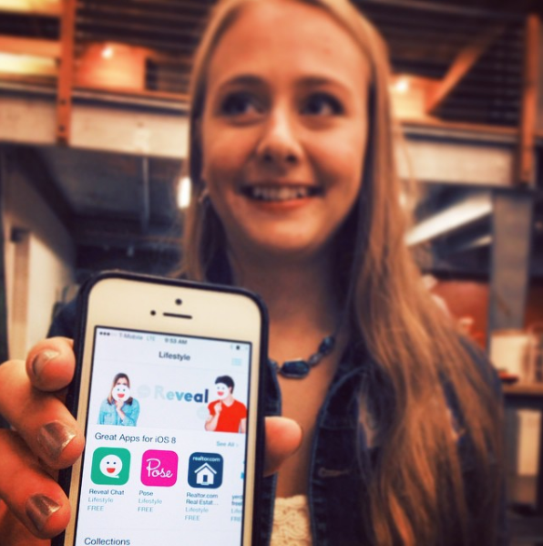

Under construction; information available upon request.

<!--
<h4 class="ls1">
  Reveal Chat was a startup dedicated to “curing loneliness.”
</h4>
<p>
  I was one of the first employees, and implemented user-facing features for desktop/mobile web using Ruby on Rails, HAML, HTML, CSS/SCSS, and jQuery.
</p>
    
<p>
  I also performed usability/customer development tests, sketched user flows, and iterated on features to improve UX and product growth on web/iOS. I ran various lightweight, “cheap” experiments to improve growth and validated features with user data.
</p>


<p class="caption">Reveal Chat website</p>


<p class="caption">Reveal Chat mobile UI</p>

<p>
  The product was officially launched September 2014. 
</p> 


<p class="caption">A photo from Reveal Chat's launch party, showing Reveal Chat being featured in the App Store</p>

<h4 class="ls2">
  In November, we were featured in <a href="https://youtu.be/FgawyMxoFU0?t=1m51s">Takei's Take</a>!
</h4>

<iframe width="560" height="315" src="https://www.youtube.com/embed/FgawyMxoFU0" frameborder="0" allowfullscreen></iframe>

<p>
  In under nine months, Reveal Chat scaled from 10,000 users to over two million users. In 2015, Reveal Chat was acquired by Rhapsody International (now Napster).
</p> -->
